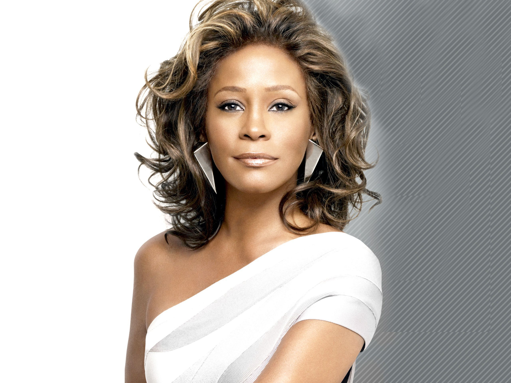

A Tribute to
Whitney Houston
Timeless Music

Whitney Houston's voice was a gift from the heavens, a powerful, soulful, and angelic instrument that captivated the world.
With a career spanning decades, she left an indelible mark on music, inspiring generations with her iconic songs, unforgettable performances, and unwavering passion. From the soaring highs of "I Will Always Love You" to the upbeat joy of "I Wanna Dance with Somebody," her music was a testament to her talent, dedication, and resilience.
Though she may be gone, Whitney's legacy lives on, her voice continuing to uplift, inspire, and unite us all, a shining reminder of the transformative power of music and the enduring spirit of a true legend.